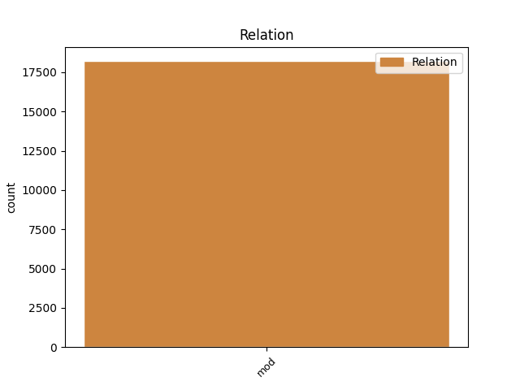
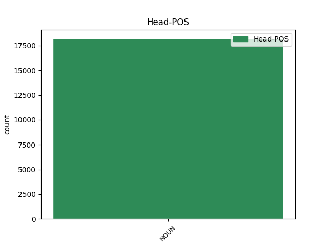
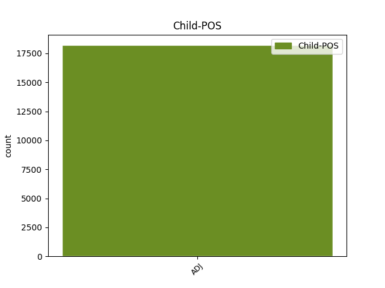

Distribution of features within this leaf



Agreement Rules sorted by frequency.
- When the dependent token is the modifer(mod) of the head token, and the head token is NOUN and the dependent token is ADJ.
1 و _ _ _ _ 0 _ _ _
2 قال _ _ _ _ 0 _ _ _
3 باول _ _ _ _ 0 _ _ _
4 خلال _ _ _ _ 0 _ _ _
5 مؤتمر _ _ _ _ 0 _ _ _
6 صحفى _ _ _ _ 0 _ _ _
7 مشترك _ _ _ _ 0 _ _ _
8 مع _ _ _ _ 0 _ _ _
9 رئيس _ _ _ _ 0 _ _ _
10 الوزراء _ _ _ _ 0 _ _ _
11 الفلسطينى _ _ _ _ 0 _ _ _
12 أبو _ _ _ _ 0 _ _ _
13 مازن _ _ _ _ 0 _ _ _
14 عقب _ _ _ _ 0 _ _ _
15 اجتماع _ _ _ _ 0 _ _ _
16 هما _ _ _ _ 0 _ _ _
17 فى _ _ _ _ 0 _ _ _
18 أريحا _ _ _ _ 0 _ _ _
19 فى _ _ _ _ 0 _ _ _
20 الضفة _ _ _ _ 0 _ _ _
21 الغربية _ _ _ _ 0 _ _ _
22 أن _ _ _ _ 0 _ _ _
23 " _ _ _ _ 0 _ _ _
24 على _ _ _ _ 0 _ _ _
25 الحكومة حُكُومَة NOUN N------S2D Case=Gen|Definite=Def|Number=Sing 0 _ _ _
26 الفلسطينية فِلَسطِينِيّ ADJ A-----FS2D Case=Gen|Definite=Def|Gender=Fem|Number=Sing 25 mod _ Gloss=Palestinian|LTranslit=filasṭīnīy|Root=filas.tIn|Translit=al-filasṭīnīyati|Vform=اَلفِلَسطِينِيَّةِ
27 وضع _ _ _ _ 0 _ _ _
28 حد _ _ _ _ 0 _ _ _
29 ل _ _ _ _ 0 _ _ _
30 الإرهاب _ _ _ _ 0 _ _ _
31 و _ _ _ _ 0 _ _ _
32 تفكيك _ _ _ _ 0 _ _ _
33 بنية _ _ _ _ 0 _ _ _
34 ه _ _ _ _ 0 _ _ _
35 التحتية _ _ _ _ 0 _ _ _
36 " _ _ _ _ 0 _ _ _
37 . _ _ _ _ 0 _ _ _
Disagree Examples:
1 و _ _ _ _ 0 _ _ _
2 كانت _ _ _ _ 0 _ _ _
3 خسائر خَسَارَة NOUN N------P1R Case=Nom|Definite=Cons|Number=Plur 0 _ _ _
4 المجموعة _ _ _ _ 0 _ _ _
5 الاسبانية _ _ _ _ 0 _ _ _
6 الرسمية رَسمِيّ ADJ A-----FS2D Case=Gen|Definite=Def|Gender=Fem|Number=Sing 3 mod _ Gloss=official|LTranslit=rasmīy|Root=r_s_m|Translit=ar-rasmīyati|Vform=اَلرَّسمِيَّةِ
7 تراكمت _ _ _ _ 0 _ _ _
8 في _ _ _ _ 0 _ _ _
9 السنوات _ _ _ _ 0 _ _ _
10 العشر _ _ _ _ 0 _ _ _
11 الاخيرة _ _ _ _ 0 _ _ _
12 ل _ _ _ _ 0 _ _ _
13 تبلغ _ _ _ _ 0 _ _ _
14 920 _ _ _ _ 0 _ _ _
15 مليون _ _ _ _ 0 _ _ _
16 يورو _ _ _ _ 0 _ _ _
17 . _ _ _ _ 0 _ _ _
1 مقتل _ _ _ _ 0 _ _ _
2 شخصين _ _ _ _ 0 _ _ _
3 و _ _ _ _ 0 _ _ _
4 إصابة إِصَابَة NOUN N------S1R Case=Nom|Definite=Cons|Number=Sing 0 _ _ _
5 آخر آخَر ADJ A-----MS2I Case=Gen|Definite=Ind|Gender=Masc|Number=Sing 4 mod _ Gloss=another,other|LTranslit=ʾāḫar|Root='__h_r|Translit=ʾāḫara|Vform=آخَرَ
6 ب _ _ _ _ 0 _ _ _
7 جروح _ _ _ _ 0 _ _ _
8 في _ _ _ _ 0 _ _ _
9 حرائق _ _ _ _ 0 _ _ _
10 في _ _ _ _ 0 _ _ _
11 بلغاريا _ _ _ _ 0 _ _ _
1 لندن _ _ _ _ 0 _ _ _
2 16 _ _ _ _ 0 _ _ _
3 - _ _ _ _ 0 _ _ _
4 7 _ _ _ _ 0 _ _ _
5 ( _ _ _ _ 0 _ _ _
6 اف _ _ _ _ 0 _ _ _
7 ب _ _ _ _ 0 _ _ _
8 ) _ _ _ _ 0 _ _ _
9 - _ _ _ _ 0 _ _ _
10 ذكرت _ _ _ _ 0 _ _ _
11 صحيفة _ _ _ _ 0 _ _ _
12 " _ _ _ _ 0 _ _ _
13 صنداي _ _ _ _ 0 _ _ _
14 تلغراف _ _ _ _ 0 _ _ _
15 " _ _ _ _ 0 _ _ _
16 اليوم _ _ _ _ 0 _ _ _
17 الاحد _ _ _ _ 0 _ _ _
18 ان _ _ _ _ 0 _ _ _
19 الصين _ _ _ _ 0 _ _ _
20 و _ _ _ _ 0 _ _ _
21 بريطانيا _ _ _ _ 0 _ _ _
22 رفضتا _ _ _ _ 0 _ _ _
23 منح _ _ _ _ 0 _ _ _
24 تاشيرات _ _ _ _ 0 _ _ _
25 ل _ _ _ _ 0 _ _ _
26 ممثلي _ _ _ _ 0 _ _ _
27 كل _ _ _ _ 0 _ _ _
28 من _ _ _ _ 0 _ _ _
29 هما _ _ _ _ 0 _ _ _
30 المكلفين _ _ _ _ 0 _ _ _
31 التحقيق _ _ _ _ 0 _ _ _
32 في _ _ _ _ 0 _ _ _
33 وفاة _ _ _ _ 0 _ _ _
34 58 _ _ _ _ 0 _ _ _
35 مهاجرا _ _ _ _ 0 _ _ _
36 صينيا _ _ _ _ 0 _ _ _
37 غير غَير NOUN N------S4R Case=Acc|Definite=Cons|Number=Sing 0 _ _ _
38 شرعي شَرعِيّ ADJ A-----MS2I Case=Gen|Definite=Ind|Gender=Masc|Number=Sing 37 mod _ Gloss=lawful,legal,legitimate|LTranslit=šarʿīy|Root=^s_r_`|Translit=šarʿīyin|Vform=شَرعِيٍّ
39 الشهر _ _ _ _ 0 _ _ _
40 الماضي _ _ _ _ 0 _ _ _
41 داخل _ _ _ _ 0 _ _ _
42 حافلة _ _ _ _ 0 _ _ _
43 ل _ _ _ _ 0 _ _ _
44 نقل _ _ _ _ 0 _ _ _
45 البضائع _ _ _ _ 0 _ _ _
46 . _ _ _ _ 0 _ _ _
1 سيول _ _ _ _ 0 _ _ _
2 15 _ _ _ _ 0 _ _ _
3 - _ _ _ _ 0 _ _ _
4 8 _ _ _ _ 0 _ _ _
5 ( _ _ _ _ 0 _ _ _
6 اف _ _ _ _ 0 _ _ _
7 ب _ _ _ _ 0 _ _ _
8 ) _ _ _ _ 0 _ _ _
9 - _ _ _ _ 0 _ _ _
10 بدا _ _ _ _ 0 _ _ _
11 اليوم _ _ _ _ 0 _ _ _
12 الثلاثاء _ _ _ _ 0 _ _ _
13 لم _ _ _ _ 0 _ _ _
14 شمل _ _ _ _ 0 _ _ _
15 العائلات _ _ _ _ 0 _ _ _
16 الكورية _ _ _ _ 0 _ _ _
17 بين _ _ _ _ 0 _ _ _
18 شطري _ _ _ _ 0 _ _ _
19 شبه _ _ _ _ 0 _ _ _
20 الجزيرة _ _ _ _ 0 _ _ _
21 التى _ _ _ _ 0 _ _ _
22 قسمت _ _ _ _ 0 _ _ _
23 ها _ _ _ _ 0 _ _ _
24 الحرب _ _ _ _ 0 _ _ _
25 قبل _ _ _ _ 0 _ _ _
26 نصف _ _ _ _ 0 _ _ _
27 قرن _ _ _ _ 0 _ _ _
28 ، _ _ _ _ 0 _ _ _
29 و _ _ _ _ 0 _ _ _
30 هبطت _ _ _ _ 0 _ _ _
31 طائرة _ _ _ _ 0 _ _ _
32 تابعة _ _ _ _ 0 _ _ _
33 ل _ _ _ _ 0 _ _ _
34 الخطوط خَطّ NOUN N------P2D Case=Gen|Definite=Def|Number=Plur 0 _ _ _
35 الجوية _ _ _ _ 0 _ _ _
36 الكورية _ _ _ _ 0 _ _ _
37 " _ _ _ _ 0 _ _ _
38 اير _ _ _ _ 0 _ _ _
39 كوريو كُورِيّ ADJ A-----MP1R Case=Nom|Definite=Cons|Gender=Masc|Number=Plur 34 mod _ Gloss=Korean|LTranslit=kūrīy|Root=kUr|SpaceAfter=No|Translit=kūrīyū|Vform=كُورِيُّو
40 " _ _ _ _ 0 _ _ _
41 في _ _ _ _ 0 _ _ _
42 مطار _ _ _ _ 0 _ _ _
43 سيول _ _ _ _ 0 _ _ _
44 اليوم _ _ _ _ 0 _ _ _
45 الثلاثاء _ _ _ _ 0 _ _ _
46 ل _ _ _ _ 0 _ _ _
47 تصبح _ _ _ _ 0 _ _ _
48 اول _ _ _ _ 0 _ _ _
49 طائرة _ _ _ _ 0 _ _ _
50 كورية _ _ _ _ 0 _ _ _
51 شمالية _ _ _ _ 0 _ _ _
52 تهبط _ _ _ _ 0 _ _ _
53 في _ _ _ _ 0 _ _ _
54 كوريا _ _ _ _ 0 _ _ _
55 الجنوبية _ _ _ _ 0 _ _ _
56 منذ _ _ _ _ 0 _ _ _
57 الحرب _ _ _ _ 0 _ _ _
58 الكورية _ _ _ _ 0 _ _ _
59 التي _ _ _ _ 0 _ _ _
60 استمرت _ _ _ _ 0 _ _ _
61 من _ _ _ _ 0 _ _ _
62 1950 _ _ _ _ 0 _ _ _
63 الى _ _ _ _ 0 _ _ _
64 1953 _ _ _ _ 0 _ _ _
65 . _ _ _ _ 0 _ _ _
1 و _ _ _ _ 0 _ _ _
2 نقلت _ _ _ _ 0 _ _ _
3 انترفاكس _ _ _ _ 0 _ _ _
4 عن _ _ _ _ 0 _ _ _
5 المتحدث _ _ _ _ 0 _ _ _
6 ب _ _ _ _ 0 _ _ _
7 اسم _ _ _ _ 0 _ _ _
8 اسطول _ _ _ _ 0 _ _ _
9 الشمال _ _ _ _ 0 _ _ _
10 فلاديمير _ _ _ _ 0 _ _ _
11 نافروتسكي _ _ _ _ 0 _ _ _
12 قول _ _ _ _ 0 _ _ _
13 ه _ _ _ _ 0 _ _ _
14 " _ _ _ _ 0 _ _ _
15 إن _ _ _ _ 0 _ _ _
16 ه _ _ _ _ 0 _ _ _
17 ليس _ _ _ _ 0 _ _ _
18 من _ _ _ _ 0 _ _ _
19 الممكن _ _ _ _ 0 _ _ _
20 حاليا حَالِيّ ADJ A-----MS4I Case=Acc|Definite=Ind|Gender=Masc|Number=Sing 21 mod _ Gloss=current,present|LTranslit=ḥālīy|Root=.h_w_l|Translit=ḥālīyan|Vform=حَالِيًّا
21 التحدث تَحَدُّث NOUN N------S1D Case=Nom|Definite=Def|Number=Sing 0 _ _ _
22 عن _ _ _ _ 0 _ _ _
23 نتائج _ _ _ _ 0 _ _ _
24 ايجابية _ _ _ _ 0 _ _ _
25 " _ _ _ _ 0 _ _ _
26 ل _ _ _ _ 0 _ _ _
27 عمليات _ _ _ _ 0 _ _ _
28 الانقاذ _ _ _ _ 0 _ _ _
29 . _ _ _ _ 0 _ _ _